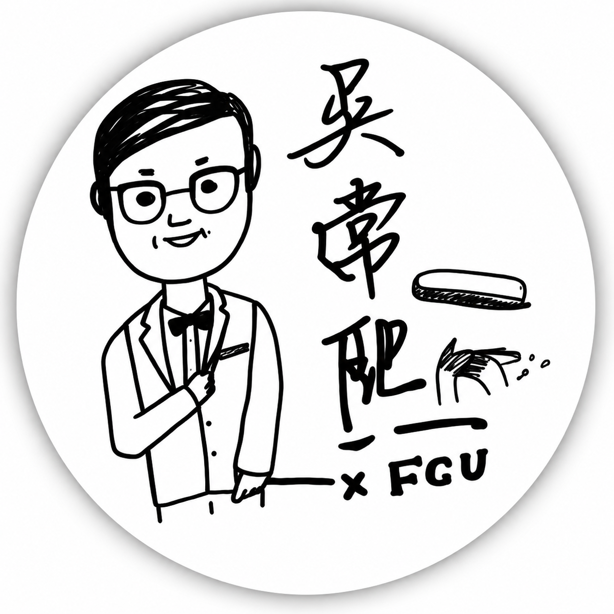
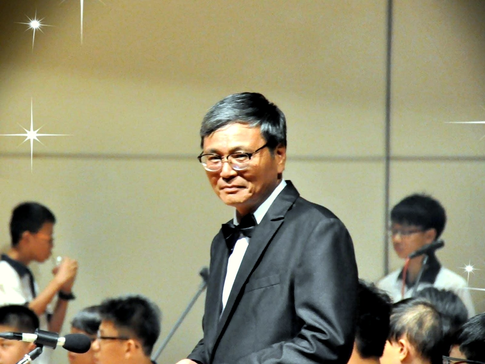

C.C. Harmonica Band
C.C.樂團由來
C.C.樂團由逢甲口琴社畢業社友組成，名稱取自已故指導老師吳常熙老師。逢甲口琴社傳承至今已來到第 61 屆，擁有逾一甲子的口琴推廣歷史。
C.C.樂團以「為了歡樂而吹口琴」為初衷，延續老師推廣口琴的精神，將口琴音樂分享給周遭，讓更多人認識口琴、喜歡口琴。


C.C. Harmonica Band
C.C.樂團由逢甲口琴社畢業社友組成，名稱取自已故指導老師吳常熙老師。逢甲口琴社傳承至今已來到第 61 屆，擁有逾一甲子的口琴推廣歷史。
C.C.樂團以「為了歡樂而吹口琴」為初衷，延續老師推廣口琴的精神，將口琴音樂分享給周遭，讓更多人認識口琴、喜歡口琴。
